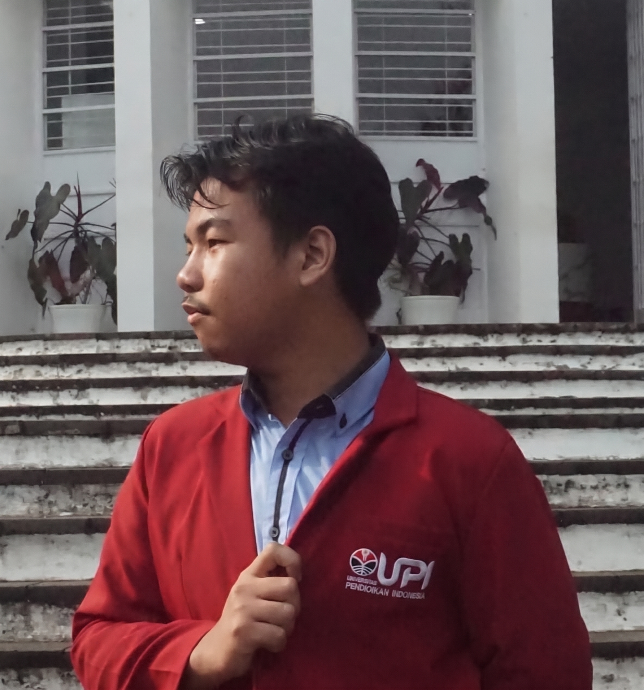

01 / TENTANG
Belajar untuk memahami,
bertumbuh bersama.
Saya mahasiswa Fisika di Universitas Pendidikan Indonesia yang percaya bahwa setiap tujuan besar dimulai dengan keberanian untuk mencoba.
Sebagai pembelajar, saya aktif mengasah kemampuan komunikasi dan kepemimpinan—baik di ruang kelas maupun organisasi seperti Klub Olimpiade HMF FPMIPA UPI dan Rumah Prestasi.

02 / PILIHAN PERJALANAN
Belajar lewat mengerjakan.
JUARA 1 · NOV 2025
DIMAS-TI AMLI 2025
Ketua tim "October Rain" dalam kompetisi storytelling STEAM nasional yang diselenggarakan oleh Asosiasi MIPA LPTK Indonesia.
MEDALI PERAK · MAR 2024
OSN Fisika Kabupaten Lebak
Meraih juara kedua pada Olimpiade Sains Nasional tingkat kabupaten dan menjadi finalis di tingkat Provinsi Banten.
03 / BEKAL UNTUK ESOK
🎓 Pendidikan
AUG 2025 - 2028
Universitas Pendidikan Indonesia
Fisika · IPK: 3.80/4.00
JUL 2022 - MEI 2025
SMAN 1 Cilograng
Ilmu Pengetahuan Alam · Nilai: 96.4/100
💼 Pengalaman Organisasi
JUN 2026 - SAAT INI
Ketua Klub Olimpiade
HMF FPMIPA UPI
APR 2026 - JUL 2026
Koordinator Divisi OPTINUS
KBK Pendidikan Fisika 2026
MEI 2026 - SAAT INI
Staff Riset dan Kreativitas
Rumah Prestasi FPMIPA UPI
04 / HAL YANG INGIN DIPELAJARI
Sains dekat dengan kehidupan.
BIDANG MINAT / 01
Instrumentasi
Ketertarikan pada bagaimana pengukuran membantu fenomena fisika diamati dan dipahami.
BIDANG MINAT / 02
Fisika Medis
Ruang temu fisika dan kesehatan yang ingin saya pelajari lebih jauh.
05 / TERHUBUNG
Mari bertukar gagasan.
Terhubung dan berbincang tentang fisika, pendidikan, atau hal-hal baru untuk dipelajari.